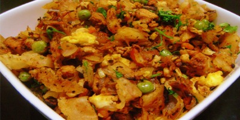

"Kothu Parota"
|

|
HistoryKothu Parota is relatively not a very old dish. According to popular beliefs, the dish found its humble beginnings in Mysore where the soldiers were given mashed bread with lentil soup. This was done as the soldiers never had the time to sit down and eat a full meal. Kothu Parota is very filling and has all the required proteins as well. Hence it constitutes as a full meal. Later on different states modified the recipie according to its needs. For instance, in Kerela the Parota is made out of maida (white flour) and is not mixed with the soup. Veechu Parota, Coin Parota, Poricha Parota, Ceylon Parota and Madurai Parota are soe other variations. Some states mix egg with the flour to make the parota soft. Most often, this is served during the breakfast and is really famous amongst students and IT workers in India. |
Ingredients
|
RecipieCut parotta into pieces or just tear them into pieces as shown in pictures. Heat oil on a medium flame, add onions, and sauté the onions for several minutes. Once the onions start turning to golden brown, add the chillies and ginger garlic paste and cook for a few minutes. Now add tomato, bell pepper and turmeric powder and sauté till the raw smell goes from tomato and it turns mushy. Add chilli powder, coriander powder, garam masala, pepper powder and salt, sauté till the raw smell leaves. Add the chopped parotta and mix well into the mixture. Now add the curry and mix well. The contents should be minced now, so use a sharp end of a flat spatula or a stainless steel bowl. Do remember that ends should be sharp. Use a pounding action using the end of a flat spatula and mince it. Cook on a medium flame for 3-4 minutes and toss the contents well. Add chopped coriander leaves, garam masala, lemon juice and mix well. Turn off flame. |
Akhil
Kavin